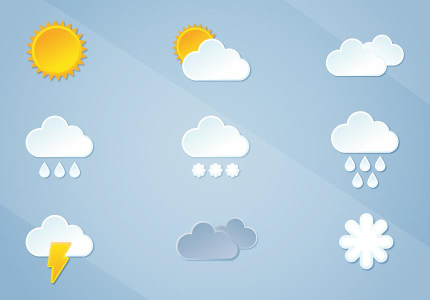

Скрам-мастер(Синяк Павел)Отвественный работник, всегда выполняющий свои обязанности вовремя. Мои сильные стороны — хорошие управленческие и лидерские навыки, клиентоориентированность, системное мышление, позитивный настрой. Не пью, не курю. |
ПРОГРАММЕР(Роман Бирюк)Дисциплинированный работник, выполняет всё вовремя, несмотря на любые трудности. Живой ум, легко выкручивается из любой ситуации. Всегда совершенствует свои навыки и готов взяться за любую работу. |
Калькулятор — электронное вычислительное устройство для выполнения операций над числами или алгебраическими формулами. Калькулятор заменил механические вычислительные устройства, такие, как абаки, счёты, логарифмические линейки, механические или электромеханические арифмометры, а также математические таблицы (прежде всего — таблицы логарифмов). В зависимости от возможностей и целевой сферы применения калькуляторы делятся на простейшие, бухгалтерские, инженерные (научные), финансовые. В отдельные классы обычно выделяют программируемые калькуляторы, дающие возможность выполнения сложных вычислений по предварительно заложенной программе, а также графические — поддерживающие построение и отображение графиков. Специализированные калькуляторы предназначены для выполнения вычислений в достаточно узкой сфере (финансовые, строительные и т. п.) По исполнению калькуляторы могут быть настольными или компактными (карманными). Отдельные модели имеют интерфейсы для подключения персонального компьютера, печатающего устройства, внешнего модуля памяти или иных внешних устройств. Современные персональные компьютеры, сотовые телефоны, КПК и даже наручные часы могут иметь программы, выполняющие функции калькулятора. Термином «калькулятор» также называются специализированные программы, встраиваемые в веб-сайты (например, «калькулятор калорий», «калькулятор размеров одежды» и пр.) или в бытовую технику (например, простой медицинский калькулятор может встраиваться в спортивный тренажёр).
Пого́да — совокупность значений метеорологических элементов и атмосферных явлений, наблюдаемых в определённый момент времени в той или иной точке пространства. Понятие «Погода» относится к текущему состоянию атмосферы, в противоположность понятию «Климат», которое относится к среднему состоянию атмосферы за длительный период времени. Если нет уточнений, то под термином «Погода» понимают погоду на Земле. Погодные явления протекают в тропосфере (нижней части атмосферы) и в стратосфере — атмосферном слое, располагающемся на высоте примерно от 11 до 50 километров. Погоду можно описать давлением, температурой и влажностью воздуха, силой и направлением ветра, облачностью, атмосферными осадками, дальностью видимости, атмосферными явлениями (туманами, метелями, грозами) и другими метеорологическими элементами.